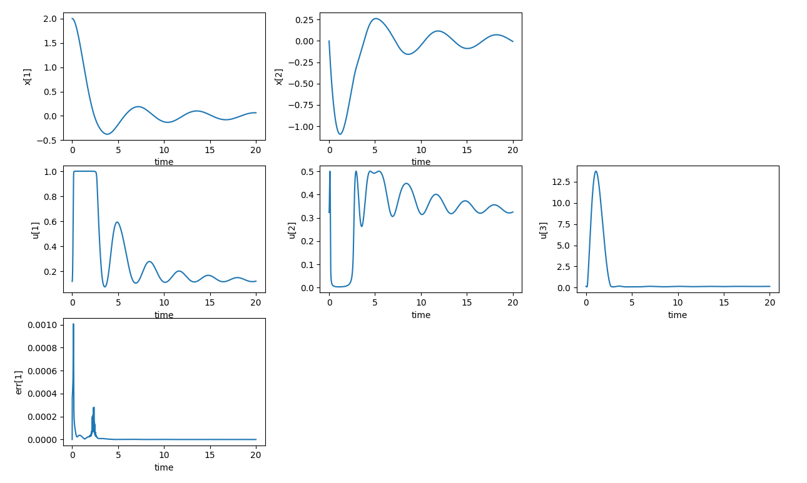
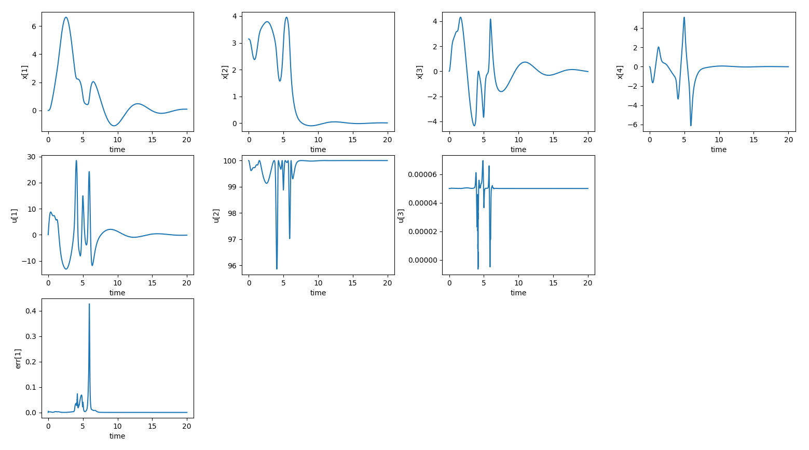

Non-linear model predictive control (NMPC) with continuation/GMRES method (C/GMRES)
Install
See here.
Technical details
See the following for a detailed algorithm.
- T Ohtsuka. Continuation/GMRES method for fast computation of nonlinear receding horizon control. Automatica, 2004.
- https://www.coronasha.co.jp/np/isbn/9784339033182/
- https://www.coronasha.co.jp/np/isbn/9784339032109/
The source code implementation is based on the following.
Examples
Make sure that it is built with --catkin-make-args tests option.
Semiactive damper
$ rosrun nmpc_cgmres TestCgmresSolver --gtest_filter=*SemiactiveDamperProblem
$ rosrun nmpc_cgmres plotCgmresData.py

TestSemiactiveDamperProblem
Cart-pole
$ rosrun nmpc_cgmres TestCgmresSolver --gtest_filter=*CartPoleProblem
$ rosrun nmpc_cgmres plotCgmresData.py

TestCartPoleProblem